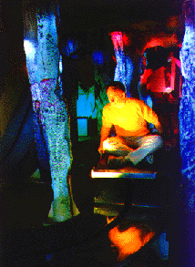

Holmes Fine Arts Gallery
Feb. 11th - April 28th (ongoing)
89 South 1st St. San Jose, California
Despite the fact that the art works in the Currents show at Holmes Fine Art Gallery are all chosen from the field of computer and electronic art, it's hard -- or impossible -- to feel that they are functioning within a common discourse. That's not necessarily a problem, but often I got the feeling that the pieces de-charged each other rather than the opposite, which shows how carefully one has to dispose the space in a show with this many participants (27 artists).
Guy Marsden and Bruce Cannon are two well-known artists that work with intricate technology and a slick aesthetic, though Cannon's style visually involves a more gray-scale mechanical approach compared to Marsden's hi-tech electronic take. In the strongest of Cannon's pieces you interact and swallow your laugh. The piece, "Poser #2", a ball- (eye-?) shaped sensor on an adjustable "arm," becomes afraid as you approach. Another, called "Donation Box", accepts your bill and chews it to shreds. His pieces interact with you but only to reject -- even if you pay, you get nothing back.
Marsden's pieces are nicer to the viewer. His expressed positivism towards science shines through, even though he writes that his "Digital Numeric Relevator"..."satirize[s] our implicit trust in electronic [...] information." That feeling gets even more distinct in his large and visually fascinating piece "Luminosa Medosa" which doesn't reach beyond a modernistic investigation into shape and colour. While the future that Marsden shows seems bright, or at least as fascinating as Star Trek, Cannon tells us about dystopia; he's an art world Huxley or Gibson.
"Father Structure" is a sculpture by Timothy Ryan. From a distance it has a rather complex and aggressive look to it, but as you get closer and start to realize its subtler qualities it becomes an intimate and poetic piece. Inside the tangle of bars and twigs there are mechanical devices that move a couple of slides, projecting them onto a small sheet of glass. The image is a back and forth "morph" of baby to man, man to baby, which most of the time creates the uncanny image of a "ghost." The sculpture's strength is how it reflects on the gap between roughness and intimacy. His other works in the show do not really take advantage of that dichotomy. The amount of information on an index level (i.e., all the colours, glue, strings and other things) seems to move the attention away from the wholeness of the piece. The tactile and complex surface, which I believe is one of his major concerns, becomes problematic. They become overwhelming, without stringency or integrity.
Most of the space in the back room is taken up by Gary Quinonez' three-dimensional pieces. One of them is a life-size hammock made of wrist watches. It may seem like a pun or a joke but it's well accomplished, with serious undertones. Maybe it's a little too illustrative for the importance of the philosophical issue of time, one which cannot be underestimated.
Several art pieces in the show deal with this question of time. One of the strongest pieces is a small "almanac" by Steve Durie, titled "Life Calendar." It's a print with small squares, one for each day of a statistically average lifespan. If you buy it (for $20) you can pin it up and put a mark for each day that goes by: Monday, Tuesday, Wednesday... It's a frightening art work that physically makes you feel time slipping away.
Steve Durie, Joe DeLappe and Geri Wittig are some of the artists in the show using computers and technology to ask questions and investigate ideas that are not related to the medium per se. In the future I think that we will see more art like this which uses computers and technology to look out, beyond self-references to the medium or to technology itself. It's about time.
